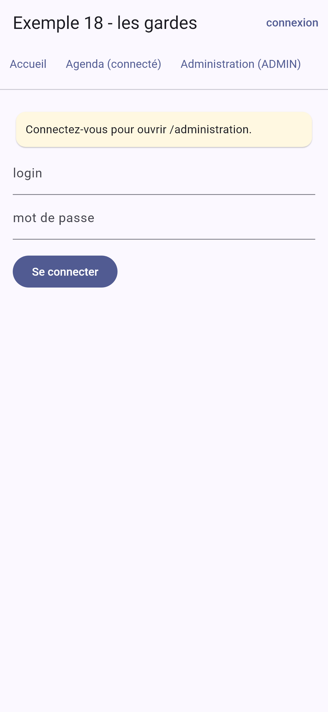
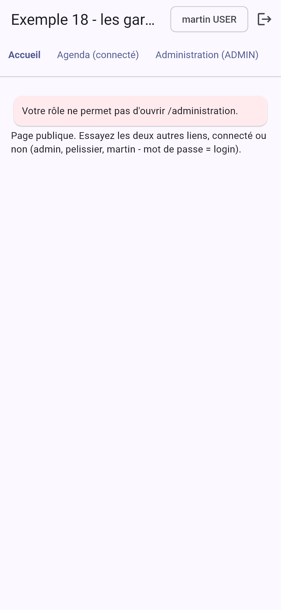

5. Le routage
Une application a plusieurs écrans. [Flutter] les gère avec le [Navigator] : une pile d'écrans, où l'on empile un nouvel écran ([Navigator.push]) et d'où on le dépile ([Navigator.pop], ou le bouton Retour du téléphone). C'est suffisant pour une petite application mobile. Mais dès qu'on veut des adresses (/medecins/2), c'est-à-dire des écrans qu'on peut désigner, ouvrir depuis un lien, recharger sur le web, protéger par des gardes, on utilise un routeur. Le paquet [go_router], maintenu par l'équipe de [Flutter] et recommandé par sa documentation, est le plus utilisé.
5.1. Exemple 17 : le routeur
5.1.1. Les données
| // des données "en dur", pour ne pas dépendre d'un serveur dans cet exemple
typedef Medecin = ({int id, String titre, String prenom, String nom, String specialite});
const medecins = <Medecin>[
(id: 1, titre: 'Mme', prenom: 'Marie', nom: 'PELISSIER', specialite: 'généraliste'),
(id: 2, titre: 'Mr', prenom: 'Paul', nom: 'TATOU', specialite: 'pédiatre'),
(id: 3, titre: 'Melle', prenom: 'Sophie', nom: 'DUPONT', specialite: 'généraliste'),
];
|
Des données « en dur », pour ne pas dépendre d'un serveur dans cet exemple : une liste de records.
5.1.2. Les routes
| // =========================================================================
// lib/ex17_routeur/routes.dart - les ROUTES de l'application
// -------------------------------------------------------------------------
// Une application a plusieurs écrans (des "pages"). Le ROUTEUR associe une
// ADRESSE (un chemin, comme sur le web : /medecins/2) à un écran. Flutter
// fournit le Navigator (une PILE d'écrans : on empile, on dépile) ; le
// paquet go_router, maintenu par l'équipe de Flutter, y ajoute les
// adresses : des liens, des paramètres, le bouton Précédent du navigateur
// et les adresses tapées à la main sur le web, le bouton Retour d'Android.
// '/medecins/:id' :id est un paramètre (/medecins/2 -> id = "2") ;
// ShellRoute une "coquille" commune (barre du haut, barre de
// navigation du bas) autour des écrans de ses routes ;
// redirect une redirection : l'ancienne adresse mène à la nouvelle ;
// errorBuilder l'écran d'une adresse qui ne correspond à aucune route.
// =========================================================================
import 'package:go_router/go_router.dart';
import 'coquille.dart';
import 'pages/accueil.dart';
// chargement DIFFÉRÉ : sur le web, le code de cette page n'est téléchargé
// qu'à la première visite (flutter build web en fait un fichier à part)
import 'pages/a_propos.dart' deferred as a_propos;
import 'pages/chargement_differe.dart';
import 'pages/detail_medecin.dart';
import 'pages/liste_medecins.dart';
import 'pages/page_introuvable.dart';
import 'pages/recherche.dart';
final routeur = GoRouter(
// l'adresse de départ (sur un téléphone : il n'y a pas de barre d'adresse)
initialLocation: '/',
routes: [
ShellRoute(
// child : l'écran de la route enfant courante, placé DANS la coquille
builder: (context, state, child) => Coquille(child: child),
routes: [
GoRoute(path: '/', builder: (context, state) => const Accueil()),
GoRoute(
path: '/medecins',
builder: (context, state) => const ListeMedecins(),
// une route IMBRIQUÉE : /medecins/2
routes: [
GoRoute(
path: ':id',
// pathParameters : les paramètres du chemin, toujours des CHAÎNES
builder: (context, state) => DetailMedecin(id: state.pathParameters['id']!),
),
],
),
GoRoute(
path: '/recherche',
// uri.queryParameters : les paramètres après le ? (/recherche?q=pédiatre)
builder: (context, state) => Recherche(q: state.uri.queryParameters['q'] ?? ''),
),
GoRoute(
path: '/a-propos',
builder: (context, state) =>
ChargementDiffere(charger: a_propos.loadLibrary, construire: () => a_propos.APropos()),
),
// une redirection : la route n'a pas d'écran, elle renvoie une autre adresse
GoRoute(path: '/docteurs', redirect: (context, state) => '/medecins'),
],
),
],
errorBuilder: (context, state) => PageIntrouvable(adresse: state.uri.toString()),
);
|
Une route associe un chemin à un écran.
- ligne 23 : un import différé ([deferred]). Sur le web, le code de cette page est compilé dans un fichier à part, qui n'est téléchargé qu'à la première visite de la page ([a_propos.loadLibrary()]). Sur un téléphone, tout le code est déjà dans l'application : [loadLibrary()] se termine aussitôt ;
- lignes 30-32 : le routeur, un objet [GoRouter], créé une fois, hors de tout widget. [initialLocation] : l'adresse de départ (sur un téléphone, il n'y a pas de barre d'adresse pour la donner) ;
- lignes 34-36 : une [ShellRoute] est une coquille commune à plusieurs écrans : la barre du haut, la barre de navigation du bas. Son [builder] reçoit [child], l'écran de la route courante, et le place dans la coquille. C'est l'équivalent des routes imbriquées et de l'[<Outlet />] de [React Router] ;
- ligne 38 : une route : son chemin, et une fonction qui fabrique son écran. [state] ([GoRouterState]) décrit la navigation en cours : l'adresse, ses paramètres ;
- lignes 40-47 : la liste des médecins, et une route imbriquée : [':id'] sous ['/medecins'] donne le chemin [/medecins/:id], où [:id] est un paramètre ([/medecins/2] : [id] vaut ["2"]). [state.pathParameters] donne les paramètres du chemin, toujours des chaînes ;
- lignes 52-54 : [state.uri] est l'adresse complète ; [queryParameters], les paramètres après le [?] ([/recherche?q=pédiatre]) ;
- lignes 57-59 : la page chargée à la demande, par le widget [ChargementDiffere] (plus loin) ;
- ligne 62 : une redirection : la route n'a pas d'écran ; sa fonction [redirect] renvoie une autre adresse, vers laquelle la navigation est déviée ;
- ligne 66 : l'écran d'une adresse qui ne correspond à aucune route.
5.1.3. Le démarrage
| // =========================================================================
// lib/ex17_routeur/main.dart
// -------------------------------------------------------------------------
// MaterialApp.router : l'application n'a plus UN écran d'accueil (home),
// c'est le routeur qui décide de l'écran, d'après l'adresse.
// usePathUrlStrategy() : sur le web, des adresses "propres" (/medecins/2)
// plutôt que la forme par défaut (/#/medecins/2). Sans effet ailleurs.
// =========================================================================
import 'package:flutter/material.dart';
import 'package:flutter_web_plugins/url_strategy.dart';
import 'routes.dart';
void main() {
usePathUrlStrategy();
runApp(
MaterialApp.router(
debugShowCheckedModeBanner: false,
theme: ThemeData(colorSchemeSeed: Colors.indigo),
routerConfig: routeur,
),
);
}
|
- ligne 16 : sur le web, des adresses « propres » ([/medecins/2]) plutôt que la forme par défaut ([/#/medecins/2]). Sans effet sur un téléphone ;
- lignes 17-21 : [MaterialApp.router] : l'application n'a plus UN écran d'accueil ([home]) ; c'est le routeur qui décide de l'écran, d'après l'adresse.
5.1.4. La coquille de l'application
| // =========================================================================
// lib/ex17_routeur/coquille.dart - la "coquille" de l'application
// -------------------------------------------------------------------------
// La barre du haut, la barre de navigation du bas, et, entre les deux,
// l'écran de la route courante (child).
// - GoRouterState.of(context).uri : l'adresse courante ;
// - context.go('/medecins') : aller à une adresse. La pile des
// écrans est REMPLACÉE par celle de cette adresse (un onglet) ;
// - context.push('/medecins/2') : EMPILER un écran au-dessus de
// l'écran courant ; le bouton Retour (ou context.pop()) le dépile.
// =========================================================================
import 'package:flutter/material.dart';
import 'package:go_router/go_router.dart';
// les onglets : (chemin, libellé, icône)
const onglets = [
('/', 'Accueil', Icons.home),
('/medecins', 'Médecins', Icons.people),
('/recherche?q=généraliste', 'Recherche', Icons.search),
('/a-propos', 'À propos', Icons.info),
];
class Coquille extends StatelessWidget {
final Widget child;
const Coquille({super.key, required this.child});
@override
Widget build(BuildContext context) {
final adresse = GoRouterState.of(context).uri;
// l'onglet actif : celui dont le chemin est le début de l'adresse courante
int actif = 0;
for (final (i, (chemin, _, _)) in onglets.indexed) {
final debut = Uri.parse(chemin).path;
if (debut != '/' && adresse.path.startsWith(debut)) actif = i;
}
return Scaffold(
appBar: AppBar(title: const Text('Exemple 17 - le routeur')),
body: Column(
crossAxisAlignment: CrossAxisAlignment.stretch,
children: [
Container(
color: Colors.grey.shade100,
padding: const EdgeInsets.all(8),
// Uri.decodeFull : %C3%A9 redevient é
child: Text(
'adresse courante : ${Uri.decodeFull(adresse.toString())}',
style: const TextStyle(fontFamily: 'RobotoMono', fontSize: 12),
),
),
Expanded(
child: Padding(padding: const EdgeInsets.all(16), child: child),
),
],
),
// NavigationBar : la barre d'onglets du bas, typique d'un mobile
bottomNavigationBar: NavigationBar(
selectedIndex: actif,
onDestinationSelected: (i) => context.go(onglets[i].$1),
destinations: [
for (final (_, libelle, icone) in onglets) NavigationDestination(icon: Icon(icone), label: libelle),
],
),
);
}
}
|
- lignes 17-21 : les onglets : des records (chemin, libellé, icône) ;
- ligne 31 : l'adresse courante. [GoRouterState.of(context)] est une lecture de donnée héritée (cf. exemple 14) : la coquille est reconstruite à chaque navigation ;
- lignes 33-36 : l'onglet actif : celui dont le chemin est le début de l'adresse courante. [for (final (i, (chemin, _, _)) in onglets.indexed)] déstructure à la fois la paire (rang, onglet) et le record de l'onglet, dont on ne garde que le chemin ([_] : « ignoré ») ;
- lignes 48-49 : l'adresse courante, affichée ([Uri.decodeFull] : [%C3%A9] redevient [é]) ;
- lignes 53-54 : l'écran de la route courante ;
- lignes 59-63 : la barre d'onglets du bas ([NavigationBar]), typique d'une application mobile. [onDestinationSelected] reçoit le rang de l'onglet touché ; [context.go(chemin)] mène à son adresse. [onglets[i].$1] : le premier champ d'un record positionnel.
Deux façons de naviguer, avec [go_router] :
- [context.go('/medecins')] : aller à une adresse. La pile des écrans est remplacée par celle que décrit cette adresse. C'est ce qu'on fait pour changer d'onglet ;
- [context.push('/medecins/2')] : empiler l'écran de cette adresse au-dessus de l'écran courant. Le bouton Retour du téléphone (ou [context.pop()]) le dépile, et l'on revient où l'on était. C'est ce qu'on fait pour « entrer » dans un détail.
5.1.5. Les pages
| // lib/ex17_routeur/pages/accueil.dart
// Title : le titre de l'onglet du navigateur (web) ou de l'application dans
// la liste des applications récentes (Android), tant que la page est affichée
import 'package:flutter/material.dart';
import 'package:go_router/go_router.dart';
class Accueil extends StatelessWidget {
const Accueil({super.key});
@override
Widget build(BuildContext context) {
return Title(
title: 'Accueil',
color: Colors.indigo,
child: ListView(
children: [
const Text(
"Bienvenue. Touchez les onglets : l'écran change, et son adresse aussi. Sur le web, "
"l'adresse s'affiche dans la barre du navigateur, les boutons Précédent et Suivant "
"fonctionnent, ainsi que le rechargement (F5) de n'importe quelle page.",
),
const SizedBox(height: 16),
// des liens vers des adresses particulières
Wrap(
spacing: 8,
children: [
OutlinedButton(onPressed: () => context.go('/docteurs'), child: const Text('/docteurs (redirection)')),
OutlinedButton(onPressed: () => context.go('/page-inconnue'), child: const Text('Lien cassé')),
],
),
],
),
);
}
}
|
Chaque page place un widget [Title] : son titre est celui de l'onglet du navigateur (sur le web) ou de l'application dans la liste des applications récentes (sur [Android]), tant que la page est affichée. Deux boutons mènent à des adresses particulières : la redirection [/docteurs], et une adresse qui n'existe pas.
| // lib/ex17_routeur/pages/liste_medecins.dart - des liens avec paramètre
import 'package:flutter/material.dart';
import 'package:go_router/go_router.dart';
import '../donnees.dart';
class ListeMedecins extends StatelessWidget {
const ListeMedecins({super.key});
@override
Widget build(BuildContext context) {
return Title(
title: 'Médecins',
color: Colors.indigo,
child: ListView(
children: [
for (final m in medecins)
ListTile(
title: Text('${m.titre} ${m.prenom} ${m.nom}'),
trailing: const Icon(Icons.chevron_right),
// push : l'écran du médecin est EMPILÉ ; le bouton Retour y revient
onTap: () => context.push('/medecins/${m.id}'),
),
],
),
);
}
}
|
- ligne 22 : toucher un médecin empile son écran.
| // =========================================================================
// lib/ex17_routeur/pages/detail_medecin.dart - une page à paramètre
// -------------------------------------------------------------------------
// Le routeur lui passe le paramètre :id du chemin, une CHAÎNE ("2").
// context.pop() dépile l'écran (comme le bouton Retour) ; context.go()
// mène à une autre adresse. Si l'on passe de /medecins/1 à /medecins/2,
// Flutter réutilise le même écran, simplement reconstruit avec un autre id.
// =========================================================================
import 'package:flutter/material.dart';
import 'package:go_router/go_router.dart';
import '../donnees.dart';
class DetailMedecin extends StatelessWidget {
final String id;
const DetailMedecin({super.key, required this.id});
@override
Widget build(BuildContext context) {
// int.tryParse : null si id n'est pas un nombre ; firstWhere... orElse : pas trouvé
final numero = int.tryParse(id);
final trouves = medecins.where((m) => m.id == numero);
if (trouves.isEmpty) {
return Text("Le médecin n° $id n'existe pas.", style: const TextStyle(color: Colors.red));
}
final medecin = trouves.first;
final suivant = medecin.id % medecins.length + 1;
return Title(
title: '${medecin.prenom} ${medecin.nom}',
color: Colors.indigo,
child: Column(
crossAxisAlignment: CrossAxisAlignment.start,
children: [
Text('${medecin.titre} ${medecin.prenom} ${medecin.nom}', style: Theme.of(context).textTheme.titleLarge),
Text('Spécialité : ${medecin.specialite}'),
const SizedBox(height: 16),
Wrap(
spacing: 8,
children: [
OutlinedButton(
// canPop : y a-t-il un écran en dessous ? (pas si l'on est arrivé
// directement à cette adresse, sur le web)
onPressed: () => context.canPop() ? context.pop() : context.go('/medecins'),
child: const Text('Retour'),
),
FilledButton(
// pushReplacement : remplace l'écran courant (pas d'empilement)
onPressed: () => context.pushReplacement('/medecins/$suivant'),
child: const Text('Médecin suivant'),
),
],
),
],
),
);
}
}
|
- ligne 16 : le paramètre [:id] du chemin, que le routeur passe au constructeur ;
- lignes 23-26 : [int.tryParse] : l'id en nombre, ou [null] ; un médecin introuvable donne un message ;
- ligne 45 : Retour : on dépile l'écran s'il y en a un en dessous ([canPop]) ; sinon (sur le web, on a pu arriver directement à cette adresse), on va à la liste ;
- ligne 50 : le médecin suivant remplace l'écran courant (pas d'empilement : le bouton Retour ramène à la liste, pas au médecin précédent).
| // =========================================================================
// lib/ex17_routeur/pages/recherche.dart - une page pilotée par l'adresse
// -------------------------------------------------------------------------
// /recherche?q=pédiatre : la page est entièrement décrite par son adresse.
// Sur le web, on peut la mettre en favori, la recharger, revenir en
// arrière. Rechercher, c'est ALLER à l'adresse /recherche?q=<saisie> :
// la page affiche ce que dit l'adresse, et rien d'autre.
// =========================================================================
import 'package:flutter/material.dart';
import 'package:go_router/go_router.dart';
import '../donnees.dart';
class Recherche extends StatelessWidget {
final String q;
const Recherche({super.key, required this.q});
void _rechercher(BuildContext context, String saisie) {
// Uri : fabrique l'adresse, en encodant ce qu'il faut (é -> %C3%A9)
context.go(Uri(path: '/recherche', queryParameters: {'q': saisie.trim()}).toString());
}
@override
Widget build(BuildContext context) {
final resultats = medecins
.where((m) => '${m.prenom} ${m.nom} ${m.specialite}'.toLowerCase().contains(q.toLowerCase()))
.toList();
return Title(
title: 'Recherche',
color: Colors.indigo,
child: ListView(
children: [
// un champ NON contrôlé, qui démarre avec la valeur de l'adresse ;
// key: ValueKey(q) : si l'adresse change (bouton Précédent), Flutter
// recrée le champ, qui reprend alors la nouvelle valeur
TextFormField(
key: ValueKey(q),
initialValue: q,
decoration: const InputDecoration(hintText: 'nom ou spécialité', suffixIcon: Icon(Icons.search)),
textInputAction: TextInputAction.search,
onFieldSubmitted: (saisie) => _rechercher(context, saisie),
),
const SizedBox(height: 8),
for (final m in resultats) ListTile(title: Text('${m.prenom} ${m.nom} (${m.specialite})')),
if (resultats.isEmpty)
const ListTile(
title: Text('Aucun résultat.', style: TextStyle(color: Colors.grey)),
),
],
),
);
}
}
|
- lignes 20-22 : rechercher, c'est ALLER à l'adresse [/recherche?q=<saisie>]. [Uri] fabrique l'adresse en encodant ce qu'il faut ([é] devient [%C3%A9]). La page est entièrement décrite par son adresse : sur le web, on peut la mettre en favori, la recharger, revenir en arrière ;
- lignes 38-43 : un champ non contrôlé, qui démarre avec la valeur de l'adresse. [key: ValueKey(q)] : si l'adresse change (bouton Précédent du navigateur), la clé change, [Flutter] recrée le champ, qui reprend la nouvelle valeur. [textInputAction: TextInputAction.search] : la touche Entrée du clavier du téléphone devient une loupe.
| // =========================================================================
// lib/ex17_routeur/pages/chargement_differe.dart
// -------------------------------------------------------------------------
// Un écran dont le code est chargé à la demande (import "deferred") :
// charger() télécharge le code (un Future), construire() fabrique l'écran
// une fois le code arrivé. En attendant : un indicateur de chargement.
// FutureBuilder reconstruit son contenu quand le Future se termine
// (cf. exemple 19).
// =========================================================================
import 'package:flutter/material.dart';
class ChargementDiffere extends StatefulWidget {
final Future<void> Function() charger;
final Widget Function() construire;
const ChargementDiffere({super.key, required this.charger, required this.construire});
@override
State<ChargementDiffere> createState() => _ChargementDiffereState();
}
class _ChargementDiffereState extends State<ChargementDiffere> {
// le Future est créé UNE fois (et non à chaque build)
late final Future<void> _chargement = widget.charger();
@override
Widget build(BuildContext context) {
return FutureBuilder(
future: _chargement,
builder: (context, etat) => etat.connectionState == ConnectionState.done
? widget.construire()
: const Center(child: CircularProgressIndicator()),
);
}
}
|
- ligne 25 : le chargement du code, lancé UNE fois (un champ [late] initialisé à sa première lecture) : si on le lançait dans [build], chaque reconstruction le relancerait ;
- lignes 29-33 : [FutureBuilder] reconstruit son contenu quand le [Future] se termine : en attendant, un indicateur de chargement ; ensuite, l'écran (cf. exemple 19).
| // lib/ex17_routeur/pages/a_propos.dart - une page chargée à la demande
// (cf. l'import "deferred as a_propos" de routes.dart)
import 'package:flutter/material.dart';
class APropos extends StatelessWidget {
const APropos({super.key});
@override
Widget build(BuildContext context) {
return Title(
title: 'À propos',
color: Colors.indigo,
child: const Text(
'Sur le web, cette page a été téléchargée à la première visite (onglet Réseau '
'des outils de développement : un fichier main.dart.js_1.part.js). Sur un téléphone, '
"tout le code est déjà dans l'application.",
),
);
}
}
|
| // lib/ex17_routeur/pages/page_introuvable.dart - l'écran des adresses inconnues
import 'package:flutter/material.dart';
import 'package:go_router/go_router.dart';
class PageIntrouvable extends StatelessWidget {
final String adresse;
const PageIntrouvable({super.key, required this.adresse});
@override
Widget build(BuildContext context) {
return Title(
title: 'Page introuvable',
color: Colors.indigo,
child: Scaffold(
appBar: AppBar(title: const Text('Page introuvable')),
body: Padding(
padding: const EdgeInsets.all(16),
child: Column(
crossAxisAlignment: CrossAxisAlignment.start,
children: [
Text("Aucune page à l'adresse $adresse.", style: const TextStyle(color: Colors.red)),
const SizedBox(height: 16),
FilledButton(onPressed: () => context.go('/'), child: const Text("Retour à l'accueil")),
],
),
),
),
);
}
}
|
L'écran des adresses inconnues a son propre [Scaffold] : il est construit par [errorBuilder], hors de la coquille.
5.1.6. L'exécution
L'accueil ; le détail d'un médecin (empilé : la barre du haut n'a pas changé, mais le bouton Retour du téléphone ramène à la liste) ; la recherche ; une adresse inconnue :
Sur le web ([flutter run -d chrome]), l'adresse s'affiche dans la barre du navigateur, les boutons Précédent et Suivant fonctionnent, et l'on peut taper une adresse à la main.
5.2. Exemple 18 : les gardes de navigation
5.2.1. La session
| // =========================================================================
// lib/ex18_gardes/session.dart - une session SIMULÉE (sans serveur)
// -------------------------------------------------------------------------
// L'utilisateur connecté doit être connu des ÉCRANS (la barre du haut,
// l'agenda) et des GARDES du routeur (des fonctions, qui ne sont pas des
// widgets). On le range dans un objet unique, un ChangeNotifier :
// - un champ privé, l'état ;
// - des méthodes pour le lire et le modifier ;
// - notifyListeners() : prévient ses abonnés (le routeur, les écrans)
// quand il change.
// (L'exemple 23 fera la même chose avec un vrai serveur.)
// =========================================================================
import 'package:flutter/foundation.dart';
enum Role { admin, doctor, user }
typedef Utilisateur = ({String login, Role role});
// trois comptes "en dur" (mot de passe = login)
const _comptes = {'admin': Role.admin, 'pelissier': Role.doctor, 'martin': Role.user};
class Session extends ChangeNotifier {
Utilisateur? _utilisateur; // l'état : null, personne n'est connecté
Utilisateur? get utilisateur => _utilisateur;
bool connecter(String login, String password) {
final role = _comptes[login];
if (role == null || password != login) {
return false;
}
_utilisateur = (login: login, role: role);
notifyListeners();
return true;
}
void deconnecter() {
_utilisateur = null;
notifyListeners();
}
}
// l'unique session de l'application
final session = Session();
|
L'utilisateur connecté doit être connu des écrans (la barre du haut, l'agenda) et des gardes du routeur, des fonctions qui ne sont pas des widgets. On le range dans un objet unique, un [ChangeNotifier] (cf. exemple 14) :
- ligne 24 : l'état : un utilisateur, ou [null] ;
- lignes 28-35 : la connexion, simulée : trois comptes « en dur » (mot de passe = login). Elle prévient ses abonnés ([notifyListeners()]) ;
- ligne 45 : l'unique session de l'application, une variable globale. (L'exemple 23 fera la même chose avec un vrai serveur.)
5.2.2. Les gardes et les routes protégées
| // =========================================================================
// lib/ex18_gardes/routes.dart - des routes PROTÉGÉES par des gardes
// -------------------------------------------------------------------------
// redirect : une fonction que go_router appelle AVANT chaque navigation
// (celle du GoRouter : pour toutes les routes ; celle d'une GoRoute :
// pour elle seule). Elle reçoit l'état de la navigation (state.uri :
// l'adresse demandée) et renvoie :
// - null : la navigation continue ;
// - une adresse : la navigation est remplacée par une navigation vers
// cette adresse.
// refreshListenable : un objet à ÉCOUTER ; quand il prévient d'un
// changement (la session : connexion, déconnexion), le routeur réévalue
// ses gardes pour l'écran courant.
//
// C'est l'équivalent, côté client, des gardes NestJS (JwtAuthGuard,
// RolesGuard) - avec une différence FONDAMENTALE : un garde du client n'est
// qu'un confort. L'application est entre les mains de l'utilisateur, qui
// peut la modifier à volonté. La vraie protection des données reste celle
// du SERVEUR (cf. chapitre sur la boîte noire).
// =========================================================================
import 'package:go_router/go_router.dart';
import 'coquille.dart';
import 'pages/accueil.dart';
import 'pages/administration.dart' deferred as administration;
import 'pages/agenda.dart';
import 'pages/connexion.dart';
import '../ex17_routeur/pages/chargement_differe.dart';
import 'session.dart';
// le garde "connexion requise" : pas connecté -> à la page de connexion, en
// retenant où l'on voulait aller
String? connexionRequise(GoRouterState state) {
if (session.utilisateur == null) {
return Uri(path: '/connexion', queryParameters: {'redirect': state.uri.toString()}).toString();
}
return null;
}
// le garde "rôle requis" : une fonction qui FABRIQUE un garde
String? Function(GoRouterState) roleRequis(Set<Role> roles) {
return (state) {
final u = session.utilisateur;
if (u == null || !roles.contains(u.role)) {
// connecté, mais pas avec le bon rôle : retour à l'accueil, avec un motif
return Uri(path: '/', queryParameters: {'refus': state.uri.path}).toString();
}
return null;
};
}
final routeur = GoRouter(
refreshListenable: session,
routes: [
ShellRoute(
builder: (context, state, child) => Coquille(child: child),
routes: [
GoRoute(
path: '/',
builder: (context, state) => Accueil(refus: state.uri.queryParameters['refus']),
),
GoRoute(
path: '/connexion',
builder: (context, state) => Connexion(redirection: state.uri.queryParameters['redirect']),
),
GoRoute(
path: '/agenda',
redirect: (context, state) => connexionRequise(state),
builder: (context, state) => const Agenda(),
),
GoRoute(
path: '/administration',
// les gardes, dans l'ordre : le premier qui renvoie une adresse l'emporte
redirect: (context, state) => connexionRequise(state) ?? roleRequis({Role.admin})(state),
// le code de la page n'est chargé qu'une fois les gardes franchis
builder: (context, state) =>
ChargementDiffere(charger: administration.loadLibrary, construire: () => administration.Administration()),
),
],
),
],
// toute autre adresse (aucune route ne correspond) : retour à l'accueil
onException: (context, state, routeur) => routeur.go('/'),
);
|
Avec [go_router], un garde est une fonction redirect, appelée avant chaque navigation (celle du [GoRouter] : pour toutes les routes ; celle d'une [GoRoute] : pour elle seule). Elle reçoit l'état de la navigation et renvoie :
- [null] : la navigation continue ;
- une adresse : la navigation est remplacée par une navigation vers cette adresse.
Le code :
- lignes 34-38 : le garde « connexion requise » : pas connecté ? à la page de connexion, en retenant où l'on voulait aller (paramètre [redirect]) ;
- lignes 42-47 : le garde « rôle requis » est fabriqué par une fonction, qui reçoit les rôles permis et renvoie le garde. Connecté, mais sans le bon rôle : retour à l'accueil, avec un motif (paramètre [refus]) ;
- ligne 54 : le routeur écoute la session : quand elle prévient d'un changement (connexion, déconnexion), il réévalue les gardes de l'écran courant. Si l'on se déconnecte sur l'agenda, on est aussitôt renvoyé à la page de connexion ;
- ligne 69 : l'agenda exige d'être connecté ;
- ligne 75 : l'administration exige d'être connecté ET d'avoir le rôle ADMIN : les gardes s'enchaînent avec [??], le premier qui renvoie une adresse l'emporte ;
- lignes 77-78 : le code de la page d'administration n'est chargé qu'une fois les gardes franchis ;
- ligne 84 : toute autre adresse ramène à l'accueil.
C'est l'équivalent, côté client, des gardes du serveur [NestJS] ([JwtAuthGuard], [RolesGuard]), avec une différence FONDAMENTALE : un garde du client n'est qu'un confort (ne pas afficher un écran inutile). L'application est entre les mains de l'utilisateur, qui peut la modifier à volonté ; la vraie protection des données reste celle du serveur, qui revérifie tout à chaque requête (cf. le chapitre sur la boîte noire).
5.2.3. La coquille et les pages
| // =========================================================================
// lib/ex18_gardes/coquille.dart - les liens, et l'utilisateur connecté
// -------------------------------------------------------------------------
// ListenableBuilder : reconstruit son contenu chaque fois que l'objet
// écouté (la session) prévient d'un changement. La barre du haut suit
// donc l'utilisateur connecté.
// =========================================================================
import 'package:flutter/material.dart';
import 'package:go_router/go_router.dart';
import 'session.dart';
class Coquille extends StatelessWidget {
final Widget child;
const Coquille({super.key, required this.child});
@override
Widget build(BuildContext context) {
final chemin = GoRouterState.of(context).uri.path;
// un lien : en gras s'il désigne la page affichée
Widget lien(String cible, String libelle) => TextButton(
onPressed: () => context.go(cible),
child: Text(libelle, style: TextStyle(fontWeight: chemin == cible ? FontWeight.bold : FontWeight.normal)),
);
return Scaffold(
appBar: AppBar(
title: const Text('Exemple 18 - les gardes'),
actions: [
ListenableBuilder(
listenable: session,
builder: (context, _) {
final u = session.utilisateur;
if (u == null) {
return TextButton(onPressed: () => context.go('/connexion'), child: const Text('connexion'));
}
return Row(
children: [
Chip(label: Text('${u.login} ${u.role.name.toUpperCase()}')),
IconButton(
tooltip: 'déconnexion',
icon: const Icon(Icons.logout),
onPressed: () {
session.deconnecter();
context.go('/');
},
),
],
);
},
),
],
),
body: Column(
crossAxisAlignment: CrossAxisAlignment.start,
children: [
Wrap(
children: [
lien('/', 'Accueil'),
lien('/agenda', 'Agenda (connecté)'),
lien('/administration', 'Administration (ADMIN)'),
],
),
const Divider(),
Expanded(
child: Padding(padding: const EdgeInsets.all(16), child: child),
),
],
),
);
}
}
|
- lignes 24-26 : une fonction locale qui fabrique un lien : en gras s'il désigne la page affichée ;
- lignes 33-37 : [ListenableBuilder] reconstruit son contenu chaque fois que l'objet écouté (la session) prévient d'un changement : la barre du haut suit l'utilisateur connecté ;
- lignes 46-48 : la déconnexion, puis l'accueil.
| // =========================================================================
// lib/ex18_gardes/pages/connexion.dart
// -------------------------------------------------------------------------
// Après la connexion, on renvoie l'utilisateur à la page qu'il voulait
// ouvrir (paramètre ?redirect=... déposé par le garde), ou à l'accueil.
// =========================================================================
import 'package:flutter/material.dart';
import 'package:go_router/go_router.dart';
import '../session.dart';
class Connexion extends StatefulWidget {
final String? redirection;
const Connexion({super.key, this.redirection});
@override
State<Connexion> createState() => _ConnexionState();
}
class _ConnexionState extends State<Connexion> {
final _login = TextEditingController();
final _password = TextEditingController();
bool _erreur = false;
@override
void dispose() {
_login.dispose();
_password.dispose();
super.dispose();
}
void _valider() {
if (!session.connecter(_login.text.trim(), _password.text)) {
setState(() => _erreur = true);
return;
}
// on n'accepte qu'un chemin INTERNE : il commence par /, mais pas par //
// (//site.com/... désigne un AUTRE site) - pas de redirection vers un autre site
final r = widget.redirection;
final interne = r != null && r.startsWith('/') && !r.startsWith('//');
context.go(interne ? r : '/');
}
@override
Widget build(BuildContext context) {
return ListView(
children: [
if (widget.redirection != null)
Card(
color: Colors.amber.shade50,
child: Padding(
padding: const EdgeInsets.all(12),
child: Text('Connectez-vous pour ouvrir ${widget.redirection}.'),
),
),
TextField(
controller: _login,
decoration: const InputDecoration(labelText: 'login'),
),
TextField(
controller: _password,
obscureText: true,
decoration: const InputDecoration(labelText: 'mot de passe'),
onSubmitted: (_) => _valider(),
),
const SizedBox(height: 16),
Align(
alignment: Alignment.centerLeft,
child: FilledButton(onPressed: _valider, child: const Text('Se connecter')),
),
if (_erreur)
const Padding(
padding: EdgeInsets.only(top: 8),
child: Text('Login ou mot de passe incorrect.', style: TextStyle(color: Colors.red)),
),
],
);
}
}
|
- lignes 41-43 : après la connexion, on renvoie l'utilisateur à la page qu'il voulait ouvrir (paramètre [redirect] déposé par le garde), ou à l'accueil. On n'accepte qu'un chemin interne : il commence par [/], mais pas par [//] ([//site.com/...] désigne un AUTRE site). Sur le web, une adresse de connexion fabriquée par un tiers ([/connexion?redirect=//site-pirate.com]) ne mènera donc jamais ailleurs.
Les autres pages sont très simples :
| import 'package:flutter/material.dart';
class Accueil extends StatelessWidget {
// ?refus=... : déposé par le garde roleRequis quand le rôle ne convient pas
final String? refus;
const Accueil({super.key, this.refus});
@override
Widget build(BuildContext context) {
return ListView(
children: [
if (refus != null)
Card(
color: Colors.red.shade50,
child: Padding(padding: const EdgeInsets.all(12), child: Text("Votre rôle ne permet pas d'ouvrir $refus.")),
),
const Text(
'Page publique. Essayez les deux autres liens, connecté ou non '
'(admin, pelissier, martin - mot de passe = login).',
),
],
);
}
}
|
| import 'package:flutter/material.dart';
import '../session.dart';
class Agenda extends StatelessWidget {
const Agenda({super.key});
@override
Widget build(BuildContext context) {
return Text.rich(
TextSpan(
children: [
const TextSpan(text: "L'agenda de "),
TextSpan(
text: session.utilisateur?.login,
style: const TextStyle(fontWeight: FontWeight.bold),
),
const TextSpan(text: " : cette page exige d'être connecté."),
],
),
);
}
}
|
| import 'package:flutter/material.dart';
class Administration extends StatelessWidget {
const Administration({super.key});
@override
Widget build(BuildContext context) {
return const Text(
'Administration : page réservée au rôle ADMIN, chargée à la demande (sur le web, son '
"code n'est téléchargé qu'à la première visite, et seulement si les gardes l'ont permis).",
);
}
}
|
| // =========================================================================
// lib/ex18_gardes/main.dart
// =========================================================================
import 'package:flutter/material.dart';
import 'package:flutter_web_plugins/url_strategy.dart';
import 'routes.dart';
void main() {
usePathUrlStrategy();
runApp(
MaterialApp.router(
debugShowCheckedModeBanner: false,
theme: ThemeData(colorSchemeSeed: Colors.indigo),
routerConfig: routeur,
),
);
}
|
5.2.4. L'exécution
Sans être connecté, on demande l'administration : le garde mène à la page de connexion (à gauche). On se connecte avec le compte [martin] (rôle USER) : la connexion ramène à l'administration, dont le second garde refuse l'accès (au milieu). Connecté avec le compte [admin], la page s'ouvre (à droite) :
 |  |  |